A Reply to Danavir Goswami's "Flat-Earth or Globular Earth?"
BY: MAYESVARA DASA
Jun 20, 2019 — IRELAND (SUN) — Part Three
The following is the third part of a response to Danavir Goswami's article "Flat Earth or Globular Earth?", Part 1 and Part 2.
We request the reader to please bear in mind that in our reply to Danavir Goswami we are not addressing the scientific arguments for or against the modern conception of the Earth as a globe floating in space; our reply is addressing the question of whether the Vedic scriptures describe the Earth as such. Whatever the reader may personally believe the Earth to be, we are discussing the nature of the Earth as it is described in Srimad Bhagavatam.
The mandate for the Temple of Vedic Planetarium is to specifically display the cosmology of Srimad Bhagavatam. My argument is that if the description of an Earth-globe cannot be found in the original Vedic literature, then we cannot simply superimpose our own modern idea of Earth onto what is essentially a radically different conception of reality (as described by Sukadeva Goswami and other Vedic seers). Indeed, Srimad Bhagavatam's revelation of the Earth's true size and shape invites us to enter into a entirely new understanding of what is real and what is illusion regarding the nature of the Earth we live on.
"The highest truth is reality distinguished from illusion for the welfare of all." (SB 1.1.2)
In Part Two of this paper we explained how Danavir Goswami had created an argument for the globe out of nowhere by falsely equating the Sanskrit names of Bhu-mandala with the supposed Earth-globe. Members of ISKCON must understand that anytime terms like 'Earth-globe' or 'Earth planet' are used by Srila Prabhupada in his English translations to Srimad Bhagavatam, the original Sanskrit names for the Earth are actually referring to the great Earth-circle (Bhu-mandala) described by Sukadeva Goswami in chapters 16-26 of the fifth canto. Although Srila Prabhupada used the conventional language of the day to refer to the Bhu-mandala as an 'Earth globe' or 'Earth planet', we should know that Bhu-mandala is an entirely different conception of Earth from what we currently understand the Earth to be. This most basic and obvious point has been disregarded by Danavir Goswami in order to make a fallacious argument that the names of Bhu-mandala are references to an Earth globe. We have discussed the details of Danavir Goswami's mistaken and misleading presentation in the previous reply.
I really don't wish to sound harsh in my assessment, but since the Temple of Vedic Planetarium will affect the consciousness of millions of people through-out the whole world, it is necessary to emphasize the following point in regards to Danavir Goswami's presentation of the Earth within the so-called 'Vedic cosmos'. The differences between Srimad Bhagavatam's description of the Earth-circle (Bhu-mandala) and the modern globe idea are so basic and straightforward that it simply beggars belief how even at this late stage in the construction of the TOVP, the head researcher for the project cannot yet present the clear difference between Srimad Bhagavatam's transcendental description of Bhu-mandala and the supposed Earth globe. If the Hare Krishna society is not to perpetrate cosmic-sized mistakes, misconceptions, and speculations to the rest of the world, we need to quickly start understanding the basic description of Bhu-mandala.
Below we shall discuss several more arguments presented by Danavir Goswami for the idea that Vedic scriptures describe Bharata-khanda (a Sanskrit name for our known Earth) as an Earth globe. Danavir Goswami presents the following evidence: (1) a note from Srila Bhaktisiddhanta Sarasvati Thakura (2) a measurement for the size of one of Bharata-varsha's nine islands (Bharata-khanda) taken from a description in the Puranas (3) a made-up story of how the sons of Sagara transformed the landscape of Bharata-varsha into nine perfectly-shaped Earth globes. I present this third argument as a 'made-up story' by Danavir Goswami since, as we shall see, it has no reference in any of the Puranas (Vedic histories). The sons of Sagara certainly dug up the Bhu-mandala, and various islands were created due to the excavation (SB 5.9.29-30), but the idea that these islands became nine globe-shaped planets is entirely Danavir Goswami's own invention.
(1) A NOTE FROM SRILA BHAKTISIDDANTA SARASVATI THAKURA
The question and answer session with Danavir Goswami on his 'opinion of the flat-Earth theory' begins as follows:
"Question #1: Many people (flat earth supporters) say that Bharata-khaṇḍa [our earth planet] is flat because it is just an island (dvipa) as it is mentioned in Visnu and Vayu Puranas, not as a globe. What is your opinion of the flat earth theory?...
Danavir Goswami Answer #1:
We don't find a description in the sastras of Jambudvipa as being spherical—circular yes, spherical no. Regarding the earth we live on which is called Bharata-khaṇḍa, it appears that it is a completely round sphere. Here is the evidence using sastra caksus (seeing through the eyes of the sastras- scriptures) and hearing from the acaryas. Below see a quotation from Siddhanta siromani and a note (commentary) by Srila Bhaktisiddhanta Saraswati Thakura.
"It is said that the circumference of the earth is 4,967 yojanas and its diameter is 1,581 yojanas. If we subtract the latitudes of the two places situated north and south of each other, multiply that difference with the circumference of the earth and divide this product with 360, we can determine the distance between them in yojanas." *
*Bimala Prasada Siddhanta Saraswati's Note: "According to Aryabhata, the circumference of the earth is 1050 yojanas (Aryasiddhantanuvada, page 3). According to Śrī Sūrya-siddhānta the circumference of the earth is 1,600 yojanas (page 9). According to Prof. Beschel, the longest radius of earth is 3962.802 miles and the shortest radius is 3949.555 miles (see Golaadhyaya Page 34)." (Siddhanta Siromani p.151)
Srila Bhaktisiddhanta is placing forward four authoritative opinions regarding the circumference of the earth we live on (Bharata-khaṇḍa).
The first is the opinion of Siddhanta Siromani—circumference: 4,967 yojanas: rounded off to 5,000 yojanas (40,000 miles). Its diameter is 1581 yojanas (12,648 miles).
The second opinion is from Sixth-century astronomer Aryabhata— circumference: 1050 yojanas (8,400 miles). It's diameter: 334 yojanas (2,675 miles)
The third opinion is from Sūrya-siddhānta— circumference: 1,600 yojanas (12,800 miles). Its diameter is 509 yojanas (4,072 miles)
The fourth is from Prof. Beschel— circumference: 3,100 yojanas (24,800 miles). Its diameter is 987 yojanas (7,900 miles)
The terms "circumference" and "diameter" are given in the singular indicating that in all four views, earth (Bharata-khaṇḍa) is taken as a round sphere. The definition of a "circumference" is, "the outer boundary, especially of a circular area; perimeter." The definition of a "diameter" is, "a straight line passing through the center of a circle or sphere and meeting the circumference or surface at each end." The earth Bharata-khaṇḍa is spherical round that accommodates the view of day and night and the seasons.
Srila Bhaktisiddhanta Sarasvati Thakura construes the earth to be a round sphere and uses Surya siddhanta, Siddhanta Siromani, Aryabhata and Western Scientist Professor Beschel as authorities to corroborate this fact. Srila Bhaktisiddhanta may well be one of the most qualified persons to explain Vedic cosmology because he is at once a master of Siddhantic Vedic astronomy and also a master of Puranic sastra, in particular, of Bhagavata Purana".
There are a number of serious issues with the above presentation and argument by Danavir Goswami:
Firstly, in what amounts to no more than one foot-note to an astronomical text, Srila Bhaktisiddhanta Sarasvati Thakura cannot be said to making an argument in favour of the idea that the Earth is a globe. This is a very serious case of putting words in the mouth of such a prominent acharya. The question of whether the Vedic Earth is flat or globe-shaped is not even the subject of discussion, nor to my knowledge was it ever a subject of discussion among the Gaudiya Vaishnavas at that time. If anyone can present evidence of any such discussion, I would be glad to hear it.
The question of the Earth's shape and size and its relative place in the universe has really only become a subject of discussion among Gaudiya Vaishnavas since 1975 when Srila Prabhupada initiated the plans to present Vedic cosmology to the world via the Mayapur Temple of Vedic Planetarium (TOVP). Even then, the question of the Earth has been received with muted interest. Within ISKCON, the question of the Bhu-mandala's nature has been addressed by Sadaputa dasa (a direct disciple of Srila Prabhupada) in his various books on cosmology; unfortunately, Sataputa dasa's various ideas on the subject were such that any sense of Bhu-mandala being simply 'the Earth' was naturally lost on the rest of the devotee community. We hope at some point to get the opportunity to review Sadaputa dasa's essentially erroneous and mis-leading exlanations of Bhu-mandala. Danavir Goswami has also addressed the question of the Earth in books such as Bhu-gola Tattva, but again the flat-Earth concept was dismissed in favour of the globe model.
The question of the Earth's shape, size, and nature has become a matter of concern in the last few years mainly because the Temple of Vedic Planetarium is due for completion in 2022 and a correct understanding of the Vedic Earth is obviously required before exhibitions can be presented to the public. We brought this issue to the attention of the Hare Krishna community with the release of our first paper on the subject called Sailing to Jambudvipa (December 2015). The paper can be found here.
In this paper we questioned the presentation of the Earth globe model within the Mayapur Temple of Vedic Planetarium, and we have continued to point out in numerous papers published on Sampradaya Sun that the Vedic cosmology does not describe the Earth to be a globe in space.
In regards to Danavir Goswami's 'evidence' for an Earth globe from the writings of Srila Bhaktisiddhanta Sarasvati Thakura, it has to be pointed out that Srila Bhaktisiddhanta Sarasvati Thakura did not present any article, book, or discussion that formally and specifically addresses the question of the Earth's nature, or the difference between the modern Western and ancient Vedic world-views. As already mentioned, the question of the Earth's nature was not an issue at the time. If Srila Bhaktisiddhanta Sarasvati Thakura had wished us to understand the Earth is a globe floating in space, (when in fact, the Srimad Bhagavatam describes something entirely different), he would have left more than one foot-note to explain the issue. The differences between the Vedic and modern conceptions of the Earth and the universe are so enormous that it requires a very detailed elaboration to explain all the opposing ideas. Danavir Goswami himself has written his own entire book on the subject (see Bhu-gola Tattva); and yet, we are expected to believe that one foot-note from Srila Bhaktisiddhanta Sarasvati Thakura (which is not even in context of a discussion or debate on the nature of the Earth) is representative of his conclusion on the subject.
Whenever one wishes to write a book on a subject, or to simply make a point on a particular topic, the theme of the subject is always introduced, and contending ideas on the matter are presented so that the reader or audience are aware of the issues. For example, when the Vaishnava acharyas wish to contend the claims of Mayavadi philosophers, they state the position of the Mayavadi teaching, and then counter with their own idea. In this current debate with Danavir Goswami, we are concerned with the question of whether Bharata-khanda is described as an isolated globe-shaped planet that floats in space, or if it is described as part of a circular flat-Earth landscape. The theme of the subject has thus been introduced, and both sides have presented their opening arguments. No formal treatise that specifically addresses the description of the Vedic Earth, and its difference with the modern conception, has ever been presented by Bhaktisiddhanta Sarasvati, or Bhaktivinoda Thakura, or even Srila Prabhupada.
To my knowledge, this question of the Earth's shape and size, and the conflict between the Vedic and modern conceptions of Earth was not addressed by Gaudiya Vaishnavas until relatively recently (after Srila Prabhupada's translation of the fifth canto in 1975, and subsequent plan to build a Temple of Vedic Planetarium to exhibit the description of the Vedic cosmos). Srila Prabhupada entrusted his own disciples to study the fifth canto and make a working model of the universe. Srila Prabhupada did not present any detailed treatise of his own on the subject.
Since Srila Bhaktisiddhanta Sarasvati Thakura was learned in astrology, astronomy, etc., one would imagine that if he had wished to address the question of the Earth, he would have surely prepared a detailed book that explains the nature of the Earth as it is described in the Puranas, and that he would have presented a full analysis of the differences and conflicts between the Vedic and modern cosmological world-views. But we find no such treatise. Despite the absence of any discourse on the subject and, based on one footnote, Danavir Goswami makes the outrageous claim that "Srila Bhaktisiddhanta Sarasvati Thakura construes the Earth to be a round sphere and uses Surya-siddhanta, Siddhanta-siromani, Aryabhata and Western Scientist Professor Beschel as authorities to corroborate this fact." In the above statement, Danavir Goswami is trying to make out that Srila Bhaktisiddhanta Sarasvati Thakura is presenting an argument for the Earth globe, when in fact no such argument has been made. This is simply a fallacious argument that grossly mis-represents our understanding of what Srila Bhaktisiddhanta Sarasvati Thakura actually thought on the matter. There can be no doubt that Srila Bhaktisiddhanta Sarasvati Thakura believes the Earth is as it is described in Srimad Bhagavatam. Sukadeva Goswami measures 'the Earth' (Bhu-gola) at pancasat-koti-yojana (4 billion miles):
pancasat-koti-ganitasya bhu-golasya (SB.5.20.38)
However, when devotees conditioned by Western cosmology hear that 'the Earth' is measured at a smaller figure of a few thousand yojana, and since they think of 'the Earth' as a globe rather than as the Vedic Bhu-mandala, then they naturally jump on any citations for a smaller Earth measurement as proof of their beloved Earth ball.
First of all we should note that none of the measurements cited by Srila Bhaktisiddhanta Sarasvati Thakura are in agreement with the modern calculation that the Earth is 8,000 miles in diameter and 24,9000 miles in circumference. Which measurement does Danavir Goswami think that Srila Bhaktisiddhanta Sarasvati is presenting as proof for the Earth globe—is the Earth 40,000 miles in circumference, or 8,400 miles, or 12,800 miles, or 24,800 miles? Surely if this was Srila Bhaktisiddhanta Sarasvati's argument for proof that the Earth is a globe, one would at least expect a conclusion on the measurement. The fact is that Srila Bhaktisiddhanta Sarasavti is not making any kind of argument for the shape of the Earth here; he is simply stating in a footnote what other sources say is the diameter and circumference of the Earth, not what he himself thinks to be the shape and size of the Earth.
For the moment, there are absolutely no grounds here to support Danavir Goswami's outrageous extrapolation on this one footnote that "Srila Bhaktisiddhanta Sarasvati Thakura construes the earth to be a round sphere and uses Surya-siddhanta, Siddhanta-Siromani, Aryabhata and Western Scientist Professor Beschel as authorities to corroborate this fact." Danavir Goswami has presented things in such a way that it sounds as if Srila Bhaktisiddhanta Sarasvati Thakura was making an argument in favour of the Earth globe paradigm, when it is actually Danavir Goswami presenting his own argument in the name of Srila Bhaktisiddhanta Sarasvati. In any case, the difference in measurements do nothing to establish Danavir Goswami's case for the globe.
The reader should also be aware that of the four sources cited above Siddhanta-siromani is not an original Vedic text revealed by rishis, but is simply an astronomical text written by the Indian mathematician Bhaskara in 1120. Likewise, Aryabhata is an Indian mathematician and astronomer born in 476 AD. Professor Bescel, I presume is a contemporary of Srila Bhaktisiddhanta, and the Surya-siddhanta does not have the authority of the original Vedas or Puranas. I personally find no contraction between the brief description of Bhu-gola in Surya-siddhanta and that of Srimad Bhagavatam, but again, one must be conscious that mis-translations, interpolations, and twisting of the text results in the unwitting reader believing that Surya-siddhanta is describing Earth as a globe when it is doing nothing of the kind. By the grace of Krishna we hope to eventually write a paper on Surya-siddhanta, and debunk the preposterous claims made on behalf of this text that the Earth described therein is a globe that floats in space.
Back to the note from Srila Bhaktisiddhanta Sarasvati: there is no context here to infer that a measurement for a smaller area of the Earth is a reference to the modern Earth globe idea. Let's briefly look again at the context established in the previous two papers in which the above measurements have to be understood. Unlike our modern idea of Earth being an isolated planet floating in space, Srimad Bhagavatam describes our local area of the Earth (Bharata-varsha) as part of a greater Earth landscape which is circular in shape, not globular. Bhu-mandala is the name for the Vedic Earth, and literally translates as the 'Earth-circle'. Our area of the Vedic Earth is called Bharata-varsha which is located in Jambudvipa. Jambudvipa is the first of the seven great cosmic-sized islands of the Bhu-mandala. Jambudvipa is measured at a massive 100,000 yojana (800,000 miles) and is described as an Earthly landscape with varieties of mountains, trees, rivers, lakes, people, and social conditions. Our own area of the Earth (in the area of Bharata-varsha) is simply a small part of this greater landscape. The image below shows the area of Bharata-varsha in relation to Jambudvipa with the great Mount Meru in the center:

Since Jambudvipa is circular not globular (as Danavir Goswami concedes), and since Bharata-varsha is part of Jambudvipa, any of the above measurements can just as well belong to a specific portion of our local area of Jambudvipa. Due to the habitual thinking of 'the Earth' as a smaller globe-shaped planet, rather than as the colossal Bhu-mandala, Danavir Goswami completely overlooks the idea that any local area on the surface of the great Earth circle can also have a diameter and circumference—a roundabout on a motorway for example has a diameter and a circumference. Circles as we well as globes have diameter and circumference! Any circular portion of a flat-Earth also has diameter and circumference! For example, in Srila Rupa Goswami's book called Sri Mathura Mahatmya: The Glories of Mathura Mandala, measurements for a circular area of the Earth are given. In that book Srila Rupa Goswami quotes the following from the Adi-Varaha Purana:
vimsati-yojananam tu mathuram mama mandalam...
"In the Adi-Varaha Purana it is said: My abode of Mathura mandala is 20 yojana in circumference. A person who stays there becomes free from all sins." (Srila Rupa Goswami, Sri Mathura Mahatmya, verse 3)
Here the Lord speaks of the holy land of Mathura being a circular area (mandalam) that has a circumference of 20 yojana (160 miles). Many if not most of the devotees within ISKCON will have traversed areas of this holy land which includes Sri Vrindavana dhama. Anyone who has been on pilgrimage to Mathura, can confidently assure those who have not been, that Mathura-mandala is not globe shaped, but is simply a flat area of land located in northern India. Pilgrims follow the parikrama or circular route around the circumference of the mandala, they do not walk around a globe.
Just as it would be foolish for anyone to argue that the place named Mathura-mandala (measured at 20 yojana) is a reference to a globe-shaped piece of land in India, it is equally foolish to claim that a measurement for a circular area of Bharata-varsha (measured at 1,600 yojana) is a reference to a supposed Earth globe floating in space. One can arrive at such an illogical conclusion only by removing Bharata-varsha from the context in which it is described—namely as being part of the larger landscape of Jambudvipa. According to Srimad Bhagavatam, just as Mathura in India is part of the larger context of Bharata-varsha, so Bharata-varsha is part of a larger surrounding landscape known as Jambudvipa. Jambudvipa itself is just a part of the colossal landscape known as Bhu-mandala (Earth circle).
trailokye prthivi dhanya jambudvipo yatah param
tatrapi bharatam varsham tatrapi mathura puri"In the three worlds the most fortunate place is the Earth (prthivi). The best of them is Jambudvipa. In Jambudvipa the best place is Bharata-varsha. In Bharata-varsha the best place is Mathura-puri." (Sanat-kumara Samhita, verse 78)
By simply disregarding the context of Bharata-varsha's location in Jambudvipa, Danavir Goswami erroneously concludes that the above measurements must be referring to a globe floating in space. There are many reasons why we calculate smaller circular areas of land. Generally its because we want to know what resides within a certain radius.
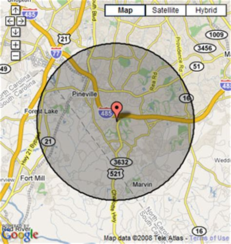
The hasty conclusion that measurements for a smaller circular area of the Earth must be referring to a globe, only arises because of Danavir Goswami's initial presumption/belief/faith that the Earth is a globe, and consequent lack of faith that the Earth can be anything else—such as a plane that continues into other areas of a greater Earth circle. If one claims to accept Srimad Bhagavatam's description that Bharata-varsha is part of the landscape of Jambudvipa, why would one even argue that Bharata-varsha is a globe floating in space? To do so only reveals one's lack of understanding or faith in what Srimad Bhagavatam is describing.
The idea that the above measurements must be referring to a globe floating in space, only arises because Danavir Goswami is looking at an ancient text through 21st century globe-tinted spectacles. It is Danavir Goswami seeing what he wants to see, rather than seeing what the text actually says. Imagine if someone 5,000 years into the future were to find a text describing a thing called the London Orbital. The M25 also called the London Orbital Motorway is a motorway encircling greater London. It has a circumference of 117 miles.
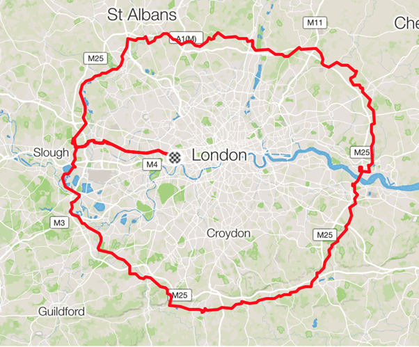
When writing about the M25, a contemporary writer does not need to inform people that the London Orbital is not a globe-shaped planet floating in space. Such non-information is not required because everyone in the UK knows that the M25 is part of the English landscape, and not something floating in space. Indeed when discussing the M25, it would be thought strange if one were to say what the M25 is not, rather than what it is. It is sufficient to say what the M25 is, and not make stupid allusions to what it is not. Likewise, the fact that there is no mention in the Puranas of Bharata-khanda turning into a globe that floats in space is intentional. One intentionally describes something as it is, and one intentionally avoids describing what it is not. Bharata-khanda is not described as a globe floating in space because that is not what it is; Bharata-khanda is described as an island because an island is what it is. Thus Sukadeva Goswami or any other rishi revealing Vedic cosmology does not need to inform their audience that Bharata-khanda is not a globe-shaped planet floating in space because that is not what it is. It is sufficient to describe Bharata-varsha and its nine islands for what it is, namely an area of land belonging to the greater landscape of Bhu-mandala. Everyone at the time would have understood that Bharata-varsha is just a part of Jambudvipa. To say that Bharata-khanda is anything other than how it is described, is simply useless mental speculation. Its the equivalent of some-one 5,000 years in the future speculating that a reference to the London Orbital's 117 mile circumference is a reference to a planet called London.
The argument is so baseless that we only wonder why we have to keep pointing out the nature of the fallacy over and over again. Since Bharata-varsha is described as part of the island of Jambudvipa, it cannot be said to be an isolated globe floating in space—at least not according to Srimad Bhagavatam.
(2) A MEASUREMENT FOR THE SIZE OF BHARATA-KHANDA
Danavir Goswami would argue that his association of the smaller measurements with an Earth-globe is not baseless or based on an a-priori assumption, but can be confirmed by further evidence. Danavir Goswami's argument for how the nine islands of Bharata-varsha became globe-shaped planets is presented as follows:
"The planet earth we live on is located on the southern-most portion of Bhu-mandala's central island of Jambudvipa.
This portion called Bharatavarsa was originally a contiguous land mass but long ago it was drastically re-formed by the incredible digging of Emperor Sagara's sixty thousand sons. They dug so extensively that most of Bharatavarsa became submerged into the saltwater ocean leaving only nine globular islands each with an 8,000 mile (one thousand yojanas) diameter. One of these nine islands is our earth planet known primarily as Bharata-khaṇḍa, also known as "Kumara," "Kumarika," "Sagarasambhrta," and so forth."
Danavir Goswami cites the names of these nine islands and the measurement of our own island at 1,000 yojana (8,000 miles).
"The north-south distance of 1,000 yojanas (8,000 miles) is constant among the Puranas. This north-south distance can be taken as the diameter of Bharata-khaṇḍa which means the circumference is about 25,000 miles."
Since the above measurement of 8,000 miles diameter and 25,000 mile circumference is the same as the measurement for the supposed Earth globe, Danvir Goswami concludes that this is the 'evidence' from the Puranas for said Earth globe. First of all, let us again consider that the above measurement contradicts the other four measurements in the foot-note by Srila Bhaktisddhanta Sarasvati Thakura that Danvir Goswami originally presented as 'evidence' for the Earth globe. But that is a minor point in comparison to fact that although Bharata-khanda (also known as Kumari-dvipa, and other names) is measured at 1,000 yojana (8,000 miles) from north to south, Danavir Goswami neglects to mention that it also has an east-west measurement of 9,000 yojana (72,000) miles. Believe it or not, the following citation is from Danavir Goswami's Rupanuga Vedic College's edition of the Vaya Purana edited by none other than Danavir Goswami himself:
"There are nine islands attached to Bharata-varṣa, separated by the ocean. One cannot go to one island from another. They are Indradvipa, Kasheru, Tamraparna, Gabhastiman, Nagadvipa, Saumya, Gandharva, Varuna and Bharata itself the ninth. Bharata-varsa is one thousand yojanas from south to north, extending from Kanyakumari in the south to Gangotri in the north. From east to west it is 9,000 yojanas (72,000 miles)." (Vayu Purana (45.78-82)
The same measurement of the ninth island of Bharata-varsha (known also as Bharata and sometimes, Kumari, etc.) is confirmed in other Puranas. In the Skanda Purana, Lord Shiva says:
"lsvara said:
...There was a great king named Bharata on the Earth. He was the son of Agnidhra. This Bharata-varsha is named after him...He divided Bharata into nine parts and gave a part to each of them...The continents were named after them. They are Indra-dvipa, Kaseru, Tamravanta, Gabhastiman, Naga-dvipa, Saumya, Gandharva and Aruna. 0 my beloved, this is the ninth one named by the Kumari... It extends to a thousand yojanas (8,000 miles) to the south of Bindusaras and north of the ocean. The length is glorified as extending to nine thousand yojanas (72,000 miles). " (Skanda Purana VII.I.172.1-11)
In the Matsya Purana, the size of the ninth island is likewise stated, though slightly larger:
"There is no field of action for mankind without Bharat-varsha. Bharata-varsa has nine divisions , viz —Indradvipa, Kashera, Tamraparni, Gabhastimana, Nagadvipa, Saumya, Gandharva, Varuna , and the ninth is this place, surrounded on all sides by the ocean. The whole of the dvipa is a thousand yojanas in extent, from north to south It is gradually broader from Kumari to the mouth of the Ganges, whence it has risen to a height of ten thousand yojanas in an oblique direction" (Matsya Purana, chapter 114, 7-10)
The east to west measurement given in the above verses for the ninth island cannot be a measurement for the entire Bharata-varsha which has a much larger east-west expanse as described by Shiva in the Skanda Purana:
"lsvara said: What is remembered as Jambudvlpa is exactly at the center of the Earth. It is divided into nine regions, 0 beautiful woman, known as the different Varshas ( regions). Therein, the first Varsha is Bharata. It is also remembered as being divided into nine parts. From south to north it measures nine thousand yojanas (72,000 miles). The distance from east to west is eighty thousand yojana (640,000 miles). Himavan is in the north. The ksiroda (ocean) is in the south." (Skanda Purana: VII.I.ll.6-8)
My apologies to the reader who may get lost in these unfamiliar measurements and who may fail to see the relevance. The relevant point is that the measurement cited by Danvir Goswami as proof of an Earth globe in the Puranas is nothing of the sort. The Puranas measure the entire Bharata-varsha at a massive 72,000 miles from north to south with a northern border (Himavata Mountain) running west to east for 640,000 miles. The ninth island of Bharata-varsha (identifiable as our known Earth area) is somewhere within this huge area and is measured at 1,000 yojana (8,000 miles) north to south and 9,000 yojana (72,000 miles) east to west. This measurement not only nullifies Danavir Goswami's argument that the ninth island is a supposed Earth globe of 1,000 yojana (8,000 miles) diameter, and 24,900 miles circumference, but again indicates that there is even more to our local area of the Earth than we presently know about.
(3) A MADE-UP STORY HOW BHARATA-VARSHA BECAME NINE EARTH GLOBES
Let's now address the fundamental absurdity of Danvir Goswami's argument regarding the formation of a globe-shaped planet that was supposedly created due to the digging of Jambudvipa by the sons of Sagara:
"They dug so extensively that most of Bharatavarsa became submerged into the saltwater ocean leaving only nine globular islands each with an 8,000 mile (one thousand yojanas) diameter."
Now why should anyone in ISKCON even consider that the Purana's description of Bharata-varsha forming into nine islands means that one of those islands is the supposed modern Earth globe that floats in space? Such an idea would only arise if the person presenting the idea had more faith in the modern globe idea than they do in the Bhu-mandala which they are meant to be explaining and presenting. The idea only arises because of the initial presumption that the Earth actually is, must be, and has to be, a globe floating in space. Otherwise in the normal world, when islands are formed out of an existing landscape they resemble the surrounding landscape, and don't suddenly become globes that float off into space. Imagine, for example, if sea levels began to rise in the world causing new islands to form around the higher land that was not submerged. The new islands would still look very much like the rest of the surrounding topography; they would not start taking the appearance of a perfect ball. Below is a picture of a series of small islands off the coast of Thailand:
Below is Danavir Goswami's image of the 'ninth island' of Bharata-varsha floating in the waters of the salt-water ocean that surrounds Jambudvipa:
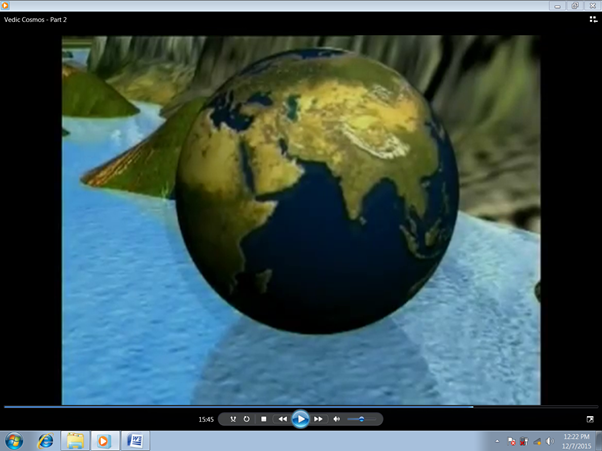
Why even assume that the division of Bharata-varsha into islands would result in these islands taking the form of perfect globes? Such an idea is clearly the super-imposition of Danavir Goswami's own assumptions and belief in the Earth-globe idea onto the original description of Bharata-varsha given in the Puranas.
Danavir Goswami's extrapolation that the digging of Bharata-varsha by the sons of Sagara resulted in the ninth island of Bharata-varsha becoming a globe-shaped planet, was based on the above two initial premises: (1) a foot-note by Srila Bhaktisiddhanta Sarasvati Thakura stating 4 different measurements for the diameter of an area of the Earth, which as we have seen, turned out to be a fallacious argument (2) a measurement for the ninth island of Bharata-varsha at 1,000 yojana (8,000 miles) diameter which is indeed the same diameter of the supposed Earth globe, only Danavir Goswami neglected to provide the east-west measurement of said island at 9,000 yojana (72,000 miles). Again, the assumption that the 1,000 yojana measurement is a reference to an Earth globe was based on a lack of information regarding the true size of the ninth island. Since both of these premises have been shown to be unfounded, there is no basis for Danavir Goswami to conclude that the islands created by the sons of Sagara ever formed into globe-shaped planets.
The reasons stated above for depicting Bharata–khanda as a globe are merely conjectures and interpolations of texts, based on the underlying assumption that any measurement given for an area of land in Bharata-varsha must be a reference to a globe (rather than to a small circular area of the Bhu-mandala landscape). The measurements provided in the Vedic scriptures for the size of the islands of Bharata-varsha have been clearly interpolated to fit a pre-conceived notion of the Earth as a globe floating in space—an image that has been indelibly marked in people's minds as the authentic image of Earth's shape. In any case, the very introduction of such an idea in Vedic cosmology is a complete failure to understand the basic geography as it is described. Since Bhu-mandala is one colossal circular land-scape, any smaller measurement for a given part of that landscape is simply a measurement for a local area of the same flat-Earth.
The idea that the nine islands of Bharata-varsha formed into perfectly globular islands is certainly a radically departure from how islands are formed. There are various ways in which Islands are formed, see National Geographic.
Generally islands are connected to the land mass beneath the water. Other than small man-made islands, or piles of driftwood and rubbish that may gather to form artificial islands, islands by definition do not form into floating globes. One would imagine that if Bharata-varsha (which is part of the surface landscape of Bhu-mandala), somehow, suddenly came to be a globe floating in space, surely an explanation for such a remarkable phenomena would have been mentioned by the great rishis in the Vedic histories (Puranas). The Puranas certainly describe equally extraordinary phenomena such as Rahu's decapitated head becoming the dark or hidden planet that causes eclipses, but there is always a lila associated with such narratives in order to provide an explanation of how things came to be. This is not the case for the idea that one of the islands of Bharata-varsha came to be the supposed Earth-globe that floats in space. In the Puranas, Rahu is included as one of the nine Vedic grahas or planets. Earth is not included in the list of planets because Earth (Bhu-mandala) is never described as floating or moving in space like the others. Earth is in its own unique category being a great circular disc that spans the center of the universe, and which is held in place by Ananta-sesha—not by so-called gravity. Bharata-varsha is a small part of this Earth, and is not 'the Earth' itself.
There are many other narrations in the Puranas of equally unusual phenomena such as that connected with the river Ganga (Ganges). Although Ganga flows through India, it is a river that also flows through the universe. In Srimad Bhagavatam, fifth canto, chapter seventeen, Sukadeva Goswami narrates the history of Lord Vamanadeva piercing the shell of the universe, and creating a hole through which the river Ganga entered the material world. The Ganga is described as flowing from the opening at the top of the universe, and passing Druva (the north star), as well as Chandra (the moon), then falling on top of Mount Meru, and eventually spreading through-out Jambudvipa, including Bharata-varsha. Thus although we perceive the Ganga flowing in India (which is part of Bharata), she is also flowing through-out the universe. In the case of Ganga, as with Rahu, and other equally remarkable phenomena, the rishis will always narrate a history to explain how the thing came to be, and the acharyas will likewise provide elaborate commentary and explanation so that there will be no confusion. This is not the case with Danavir Goswami's idea that the nine islands of Bharata-varsha became Earth globes floating in space.
Members of ISKCON should know that Danavir Goswami's version of how Bharata-khanda came to be simultaneously a globe floating in space, and a globe floating on the salt-water ocean, is not mentioned in any Purana or in any of the commentaries by the Vaishava acharyas. In the Commentaries on 5th Canto Bhagavata Cosmology, published by Danavir Goswami, none of the acharyas actually ever mention an Earth globe floating in space, nor do they refer to secondary texts such as Surya-Siddhanta to make a claim or argument for the existence of such an entity. No description of a small Earth globe supposedly representing Bharata-varsha is actually given in any of the 18,000 verses of Srimad Bhagavatam or in any other Purana. The Mahabharata is the largest scripture in the world consisting of a massive 100,000 verses. The Mahabharata is actually the history of Bharata, and guess what—there is no history of any part of Bharata ever transforming into a globe floating in space! Such an entity simply does not exist anywhere in the Vedic literature. But rather than beginning to question the authenticity and sanctity of the whole Earth-globe ideology, those writing on the subject of 'Vedic cosmology' simply go on speculating and constructing even greater convoluted arguments to justify the placement of the Earth-globe concept into Srimad Bhagavatam's cosmological system.
Although Srila Prabhupada often spoke of Bharata-varsha as 'this Earth planet,' it was more with the intention of helping Westerners (unfamiliar with Vedic nomenclature) to understand that the Sanskrit name Bharata-varsha is referring to where we are in the Vedic Universe (our place name). Let's keep in mind that since no description of an Earth globe appears in Srimad Bhagavatam, and that Bharata-varsha is otherwise clearly described as being on the plane of Bhu-mandala in the southern district of Jambudwipa, one would have to present various detailed arguments to justify the idea that Bharata-khanda is a globe floating in space. Srila Prabhupada, however, never presented any detailed or sophisticated arguments to explain how Bharata-varsha became a globe in space. Other than presenting the common assumption that the Earth is a globe in space, Srila Prabhupada never attempted any elaborate treatise to argue that it is so; and certainly he never attempted to rationalize how the Earth could be a planet floating in space, when the location of our Earth area is described by Sukadeva Goswami to be just part of the Bhu-mandala itself.
So let's think about this point for a moment: if one wants to move from Srimad Bhagavatam's description of Bharata-varsha's location on the Bhu-mandala, to the idea that Bharata-varsha is a planet floating in space, it's obviously going to take a lot of explanation. One has to go from the description of Bharata-varsha being part of Jambudvipa and surrounded by the salt-water ocean, to the idea that part of Bharata-varsha forms into an isolated globe-shaped planet that floats in dark empty space. The transition of one of Bharata-varsha's islands into a globe floating in space is going to take some heck of an explanation! And yet, an Earth globe floating in space is never even mentioned by any of the acharyas in their commentaries to the fifth canto. Why do the acharyas in their commentaries never discuss such a gaping difference between the Vedic and modern conception? Why do they never present explanations to spell out how and when Bharata-varsha comes to be a planet floating in space when it is described otherwise as a tract of land on the surface of Bhu-mandala? The answer is again simple—the previous acharyas in their commentaries to the fifth canto never considered 'the Earth' as a globe, because 'the Earth' is always understood as a great circular plane that is held up by Ananta-sesha. Our own continents form a small part of Bharata-varsha which itself is just one small area among many that lay scattered on the massive surface of the Bhu-mandala. Both Sri Krishna Chaitanya Mahaprabhu and his followers were still speaking of the Earth in these terms only five hundred years ago.
As with Srila Bhaktivinoda Thakura and Srila Bhaktisiddhanta Sarasvati Thakura, Srila Prabhupada, never prepared a book citing different shastric verses, etc., to explain the differences between the Vedic and modern conceptions of the Earth. Why did Srila Prabhupada never address the question or attempt any elaborate answer? The most likely reason is that the differences between the two world-views was not even raised until after the publication of the fifth canto in 1975. Specifically it was not until the Bhu-mandala discussions of June/July 1977 that the glaring discrepancies between the two world-views really began to become manifest. Quite simply, it was late in the day before Srila Prabhupada along with his disciples even began the process of deciphering the mysterious description of the Earth given by Sukadeva Goswami. At this late point, Srila Prabhupada's emphatic and repeated instruction was to just follow the Srimad Bhagavatam's version.
In the absence of a clear conception of Bhu-mandala, Srila Prabhupada throughout his translations, conversations, and lectures, simply referred to both Bharata-varsha and the Bhu-mandala as an Earth planet floating in space, but here is no reason to suppose that Srila Prabhupada was attached to the idea. Indeed in his letter to SL Dhani, Srila Prabhupada declared that according to the description in Srimad Bhagavatam, the Earth-circle (Bhu-mandala) would be exhibited in the Temple of Vedic Planetarium:
"Now, here in India, we are planning construction of a very large "Vedic Planetarium" or "Temple of Understanding". Within the planetarium we will construct a huge, detailed model of the universe as described in the text of the fifth canto of the Srimad Bhagavatam...The model will depict...The earthly system (bhu-mandala with Sumeru in center, seven islands (saptadvipa), seven oceans (sapta-samudra), Manosattara Parvata, Lokaloka Parvata, Alokavarsa." (Letter to S.L. Dhani, 14 November 1976)
Srila Prabhupada did not preach more about Bhu-mandala simply because the mysterious description of the Vedic Earth had not been deciphered by the time of Srila Prabhupada's departure in 1977, nor had there been much discussion regarding the differences between the Vedic and modern conceptions of the Earth. For the course of his preaching Srila Prabhupada had simply worked with the conventional understanding of the Earth. This has led devotees to falsely assume that Srila Prabhupada's references to the 'Earth-globe' are proof that he believed it to be such. We have argued in Part 2 of this paper and in other papers why this assumption is invalid.
Unlike what Danavir Goswami and others are attempting to do now, Srila Prabhupada never presented any arguments as to why Bharata-varsha should be considered a globe floating in space. The arguments presented for the idea that Bharata-kanda is an Earth-globe, is solely the work of 21st century members of ISKCON who are intent on superimposing their own modern understanding of the Earth onto Srila Sukadeva Goswami's original description. The colorful story of Bharata-varsha's nine islands becoming globes in space is Danavir Goswami's own invention, and has no support, or reference to anything, in the original Puranas, or commentaries. Despite Danavir Goswami's claims to be following shastra and parampara, his version of events is more akin to the end result of a game of Chinese whispers in which the final speaker announces a message that has lost all sense of the message first imparted by the original whisperer.
In the absence of any narrative describing the islands of Bharata-varsha becoming floating globes in space, we can safely conclude that the islands are where they are described to be—sitting off the southern coast of Jambudvipa.
Let us put aside for a moment what we assume the Earth to look like, and just consider the actual description of Bharata-varsha as being part of Jambudvipa. Since Bharata-khanda is described as part of a larger Earth landscape, it means those presenting the Earth as a globe are not actually representing (re-presenting) the actual situation of Bharata-varsha in the context of the description given by Sukadeva Goswami. It should be noted that Danavir Goswami himself uses the word contiguous in his description of the relation between Bharata-varsha and Jambudvipa:
"The planet earth we live on is located on the southern-most portion of Bhu-mandala's central island of Jambudvipa.
This portion called Bharatavarsa was originally a contiguous land mass but long ago it was drastically re-formed by the incredible digging of Emperor Sagara's sixty thousand sons. They dug so extensively that most of Bharatavarsa became submerged into the saltwater ocean leaving only nine globular islands each with an 8,000 mile (one thousand yojanas) diameter. One of these nine islands is our earth planet known primarily as Bharata-khaṇḍa, also known as "Kumara," "Kumarika," "Sagarasambhrta," and so forth."
The word contiguous means 'sharing a common border', 'touching', 'neighbouring', 'adjacent', 'joining', 'next-door', etc. An example of the use of the word contiguous is in the following statement: "the contiguous states of New Mexico, Arizona, Texas, and California". Anyone who still follows basic geography can understand that New Mexico, Arizona, Texas, and California are neighbouring states in the country of the United States of America. If parts of this area of America ever became submerged, we would not expect globular planets to suddenly manifest from the remaining landscape; nor would we expect the rest of America along with the Atlantic and Pacific Oceans to simultaneously disappear into another dimension leaving the islands as globular planets floating in space. Absurd as that sounds, that is exactly what Danavir Goswami claims to have happened to Bharata-varsha.
Yes, the original Bharata-varsha was divided into many islands, but Danvir Goswami's own version of events is that when Bharata-varsha got submerged by the waters of the great salt-water ocean due to the the digging of the sons of Sagara; nine globe-shaped islands magically appeared in the landscape; the rest of the 800,000 mile island of Jambudvipa along with the 800,000 mile salt-water ocean vanished into another dimension and, lo and behold, we find ourselves floating in space, just like in NASA's pictures of the Earth! Unfortunately, that is the nature of the so-called 'evidence' which will form the basis for presenting the Earth as a globe in the Temple of Vedic Planetarium. Clearly Danavir Goswami is making the story up as he goes along, and its all based on the initial assumption that the Earth is a globe. If one simply accepts the description Bharata-varsha's location on Jambudvipa, then its obvious that the Srimad Bhagavatam reveals our own area of the Earth to be still 'contiguous' with Jambudvipa.
noun, plural con·ti·gu·i·ties.
the state of being contiguous; contact or proximitya series of things in continuous connection; a continuous mass or extent
Indeed all the seven cosmic–sized islands and oceans of Bhu-mandala form one continuous or contiguous flat-Earth landscape:
"The seven continents and the seven oceans encircle each other. They are in contiguity with each other, surrounding each other naturally". (Vayu Purana, chapter 42: 122)
Danavir Goswami's translation:
"Like this, the seven islands are surrounded by the seven oceans. First an island, next an ocean, again an island, again an ocean—this is the order." (Vayu Purana, 49:122 Danavir Goswami ed)
The Vaishnava acharyas in their commentaries to the fifth canto of Srimad Bhagavatam strictly follow Sukadeva Goswami's description of the Earth as a great circular plane with all its fantastic and colossal features. Our area of the Earth (Bharata-varsha) is consistently described as part of the colossal super-continent named Jambudwipa which is at the center of the Bhu-mandala. As mentioned, the acharyas in their commentaries on the Vedic cosmology section of Srimad Bhagavatam, never mention that Bharata-varsha is a globe floating in space. We have addressed Srila Prabhupada's presentation of the Earth as a globe floating in space in a paper called "Does the Earth Float in Space?".
SUPERIMPOSING MODERN ASSUMPTIONS ONTO ANCIENT SCRIPTURES
So if neither the Puranas or the acharyas describe the Earth as a globe floating in space, where does the idea that the Vedas describe an Earth-globe come from?
What passes in the name of ISKCON's 'Vedic cosmology' is simply the superimposition of the Western, non-Vedic, cosmological ideology developed by Copernicus, and others which is essentially atheistic and impersonalistic at its core (we shall explore this connection between atheism, impersonalism, and globe ideology in a later paper). Unfortunately, neither Sadaputa dasa nor Danavir Goswami has been able to penetrate this 'global' ideology, and the mainstream of ISKCON unthinkingly follows their understanding that the Vedas describe Earth to be a globe. Wikipedia defines the term 'superimposition' as follows:
"In graphics, superimposition is the placement of an image or video on top of an already-existing image or video, usually to add to the overall image effect, but also sometimes to conceal something (such as when a different face is superimposed over the original face in a photograph)."
For example, if we superimpose the face of President Vladimir Putin over the face of President Donald Trump we get a merge of likeness that doesn't allow us to see the original face of either President:
The image is disorientating because although we can recognize two familiar and individual faces, they are merged in such a way that one new and different face has been created. Although the new face is not a real one, someone in the future (when Donald Trump and Vladimir Putin are both long dead and forgotten) may think the face on the cover of Time magazine belonged to an actual person when in reality it is just a morph. A similar thing has happened with ISKCON's 'Vedic Cosmology'. All of ISKCON's presentations on 'Vedic cosmology' show the familiar Earth globe icon superimposed onto, or morphed with, the images of Bhu-mandala (as if they are one thing when they are actually two completely different concepts of reality). Unfortunately most devotees are not trained to see the difference. When I showed a friend the Putin/Trump morph and asked who it was in the picture, they responded by saying it was Trump. For some reason, they couldn't see beyond Trump's face to spot Putin's face merged in the image. In the same way, the modern Earth globe idea is so cleverly merged with the Bhu-mandala concept that most devotees cannot understand that they are completely different cosmological systems, and radically opposed conceptions of reality.
And just as the superimposition of Vladimir Putin's face over Donald Trump's face conceals the true features of President Trump, so the promotion of the Earth globe idea in ISKCON's 'Vedic cosmology' simply conceals the underlying truth of the Bhu-mandala (Earth-circle) as it is originally described in the Srimad Bhagavatam and other Puranas. When people come away form a lecture, book, or exhibition, on Srimad Bhagavatam's 'Vedic cosmology' they do not come away with the understanding that Srimad Bhagavatam describes our own area of the Earth as being surrounded by more lands and oceans belonging to a greater Earth landscape; rather they come away with the idea that Srimad Bhagavatam also teaches that the Earth is a isolated globe that floats in space. The Earth globe ideology is promoted as the 'reality', and meanwhile the actual reality of the Bhu-mandala which Sukadeva Goswami is attempting to explain, is concealed behind the rhetoric of it being 'too subtle' to see, or in 'another dimension', and thus not capable of being comprehended.
A double standard is also employed in this presentation. For example, when Srimad Bhagavatam's description requires Danavir Goswami to present the nine islands of Bharata-varsha as part of Jambudvipa, Danavir Goswami correctly shows the islands off the southern shore of Bhu-mandala's central island:
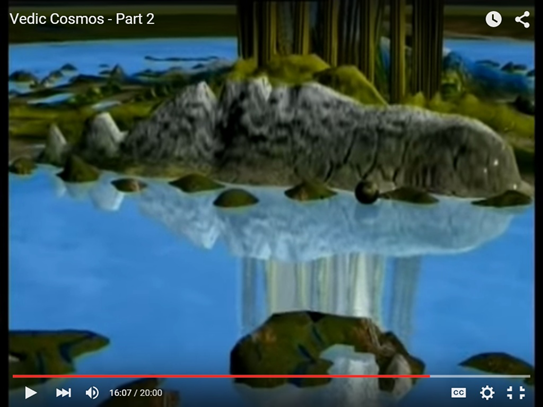
However, because Danavir Goswami has not yet overcome his Earth-globe conditioning, he still has to find ways to present our Earth as the familiar globe floating in space. Thus Danavir Goswami depicts Bharata-varsha as a globe floating on water, and then constantly switches from presenting Bharata-varsha as part of Jambudvipa to presenting Bharata-varsha as an Earth-globe floating in space. However, notice that when Bharata-varsha requires to be presented as a globe in space, the rest of Jambudvipa becomes a spanner in the works and is seen to suddenly vanish from the picture. In the image below, taken from Danavir Goswami's Vedic Cosmos documentary, Danavir Goswami magically disappears the Bhu-mandala depicted earlier in the video, and the Earth is no longer floating in water off the coast of Jambudvipa, but is suddenly back to its old self as a globe floating in dark space:

The above picture of the Earth is from Danavir Goswami's 'Vedic Cosmos'.
Unfortunately the rest of the Vedic cosmos has disappeared.
What happened to the 800,000 mile salt-water ocean and the rest of the 800,000 mile island of Jambudvipa? In our previous articles on Flat-Earth in Mahabharata and Flat-Earth in Ramayana we gave details of the Vedic history which tell of Yudhisthira, for example, governing the entire Jambudvipa only 5,000 years ago. King Yudhisthira ruled the entire Jambudvipa from India, but where is his kingdom in the above presentation of Earth? The rest of Jambudvipa has simply been 'impersonalized'.
In the normal world, when an island is formed, it doesn't take the shape of a globe floating on water; nor does the rest of the surrounding land and ocean sometimes vanish or disappear into 'another dimension'. In Danavir Goswami's conception of the Vedic universe, the nine islands of Bharata-varsha can take the shape of perfect globes that simultaneously float on water or float in space depending on whatever argument Danvir Goswami wishes to make. Like a magician's trick, Danavir Goswami flicks back and forth between ancient and modern world-views as if they were describing the same cosmological system, when in fact they are radically opposed conceptions of reality. Meanwhile, everyone else in ISKCON is perfectly find with the idea that entire landscapes containing huge mountains, rivers, trees, people and animals can just disappear whenever an argument requires it, and as if its the most natural thing in the world to do.
In the above two images the Earth is incongruously presented as a globe, whilst the other eight islands of Bharata-varsha look like normal islands. In his latest article Danavir Goswami informs us that all of the nine islands have become globes. Leaving that little detail aside, we acknowledge that in at least one of his images, Danavir Goswami has correctly presented our known Earth in the context of the larger Bhu-mandala landscape.
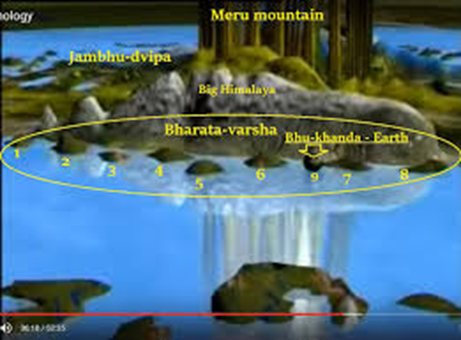
The animation shows that Danavir Goswami is aware that the Puranas do indeed describe our Earth as a small part of a much larger Earth plane. This is the fact that everyone in ISKCON should be focusing on—that our known Earth is described as only a small part of a surrounding and much larger Earth circle. Why is this massive disclosure of the Earth's true nature being ignored? Its as if the 'earth-shattering' information that we live on a huge circular Earth is not as important as the need to maintain faith that we live on a globe floating in space. Clearly ISKCON has a crisis of faith in its own scripture. It is remarkable how Danavir Goswami can come so close to the intended idea presented by Sukadeva Goswami, but still fail to come out of the Earth-globe illusion.
Danavir Goswami's animation of a globe-shaped Earth floating on water and surrounded by other land features is, of course, a shock to the mind accustomed to perceive images of the Earth as a lonely globe floating in dark, empty space. However, the idea presented in the above images from Vedic Cosmos that there are other land areas within the vicinity of our Earth's continents and oceans is not something that any of us can personally confirm or deny. Which one of us, for example, has personally gone into outer space to confirm the actual position of Earth as a rotating globe in space? And which one of us has personally crossed the Arctic and Antarctica regions to see if there is actually more land to be discovered? All of us rely on images of Earth from agencies such as NASA. Although most people would not feel any need to call these images and accounts into question, a follower of Srimad Bhagavatam has to call these images into question because according to Srimad Bhagavatam there are indeed other lands and other humans in the vicinity of the place we call Earth. They rest on the same salt water oceans as our own. Theoretically, if we set a northern course following the north star (not the north pole), we could sail to Jambudvipa on the same ocean. In saying that we can sail to Jambudvipa, I merely wish to make the point in a poetic way that according to Srimad Bhagavatam, we share an Earth plane with fellow humans in other civilizations. By seeing through eyes of shastra we can understand that there is more Earth. The recent expose of NASA's so-called images of Earth by members of the flat-Earth community not only uncovers the greatest hoax in history, but opens up a whole new understanding and appreciation of Srimad Bhagavatam's expanded Earth concept.
Any attempt to go to Jambudvipa (at this point) would most likely be diverted in some way by the power of deva, employing strong illusions and stronger resistance. Since each group of living beings is confined by karma to their respective area of the Earth, the humans in Bharata-varsha (especially during the period of Kali-yuga) cannot whimsically travel to other parts of the Earth plane. Journeys to other parts of the Earth-circle are not impossible since the Puranas are replete with narrations of persons travelling to and fro from different parts of Bhu-mandala, but the ability to travel further requires special qualification such as perfection in yoga (siddhi) or performance of particular yajnas. Generally people are transferred to other locations of the Earth at the time of death. The soul takes birth in the new situation according to the karma and desire developed during a number of life-times in Bharata-varsha. Having said that all that, we shall discuss in forthcoming papers why we believe Lord Chaitanya's sankirtan movement may bring about a renewed contact with these other parts of the Earth.
OUR LOCAL FLAT-EARTH
Let's go back now to the measurements for the smaller area of Earth and consider how to best understand them...
Since Danavir Goswami obviously 'thinks' of 'the Earth' as a globe, he completely completely overlooks the idea that any area on this great flat Earth circle flat-Earth also has a diameter and circumference. Considering that the rest of Bhu-mandala (starting with the circular Jambudvipa) is described as a continuous horizontal plane, there is no reason to suppose or assume that the measurements for a smaller area of the Earth necessarily describe an Earth globe. Based on the a priori assumption that the Earth is a globe, Danavir Goswami simply presupposes that the above dimensions for the Earth must be referring to a supposed globe that floats in space
We have noted that none of the figures presented by Danavir Goswami actually correlate with the diameter and circumference of the modern Earth globe model; however, depending on how far one draws a radius from the center, any of the above figures can fit a particular diameter and circumference of a local flat-Earth area. The Gleasons New Standard Map of the World (1892) conveys some idea of how the continents of our known Earth would look from the flat-Earth perspective:
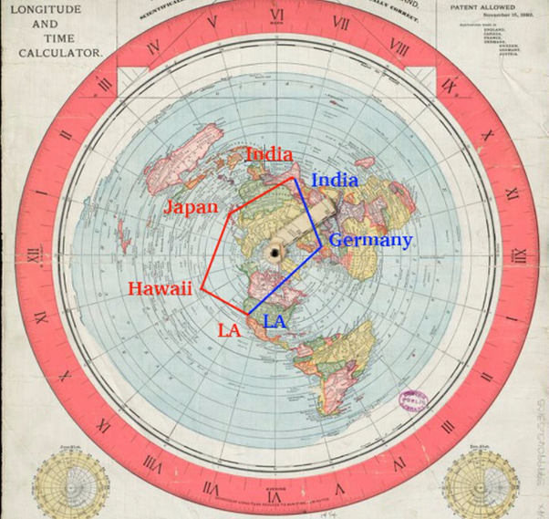
Gleasons New Standard Map of the World (1892).
The image shows east to west circumnavigation on a flat-Earth.
We acknowledge that the Gleasons map may be not an entirely accurate representation of our local flat-Earth, and that there are also inconsistencies in this map to be explained. However it is an interesting concept to work from. It will be one of the tasks of the Temple Of Vedic Planetarium to eventually present an accurate flat-Earth map of our known Earth area. There are various observations and experiments that can be eventually conducted to ascertain the actual layout of the continents on the flat-Earth model. Whatever the actual layout turns out to be, the concept of a local flat-Earth area is in keeping with the overall flat-Earth concept of Bhu-mandala. Moreover, any of the above measurements for the diameter and circumference of our local Earth area can apply to the flat-Earth model, depending on how far one wishes to draw the radius from a central point.
A contemporary depiction of our local area of the flat-Earth looks like this:
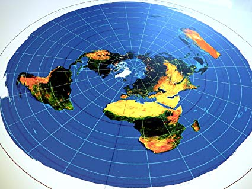
According to the description in the Puranas of Bharata-varsha's location in Jambudvipa, this small area of our known world is actually surrounded by more ocean and more lands belonging to Bharata-varsha, and ultimately to the rest of Bhu-mandala. Our local flat-Earth is thus not isolated and floating in space, but is connected to the surrounding flat-Earth landscape of Bhu-mandala. Unfortunately we have no images at the present time to show the local flat-Earth area in its relation to the rest of Jambudvipa, though the above images from Danavir Goswami's Vedic Cosmos video give us some idea of what it may look like. Danavir Goswami's image of the globe-shaped Earth floating on Jambudvipa's salt-water ocean would appear more credible if it simply depicted the continents of Earth as lying flat and surrounded by the great salt-water ocean, not floating like a ball on top of it. Such a depiction would actually correspond with our perception of reality; for as we fly or sail over land and oceans we find Earth to be perfectly flat in all directions. Apart from the demonstrably fake photos and videos presented by NASA, there is no observable or measurable curvature of the Earth anywhere.
Interestingly, many flight routes appear to make more sense on the azimuthal equidistant flat-Earth projection than on a globe. On the globe model, flights from south Africa to Australia via Dubai are shown to fly from the southern hemisphere into the northern hemisphere and then back to the southern hemisphere, which makes no sense at all. On the flat-Earth map the flight routes are shown to be direct:
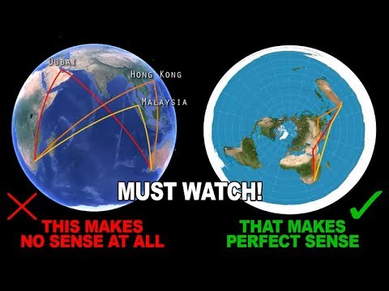
Similarly with flights from south America to Australia, the flight patterns shown on the flat-Earth map makes more sense than on a globe:
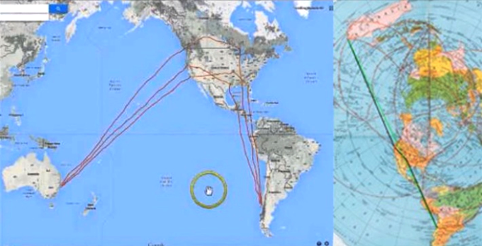
We should also note that pilots do not factor for any so-called curvature of the Earth. Apart from the take off and landing, an airplane flies parallel to the surface of the flat-Earth below. Surprisingly, many modern agencies such as the United Nations and the World Health Organization use the azimuthal equidistant flat-Earth projection in their logos:
A similar flat-Earth projection is shown in Monte's map of 1587
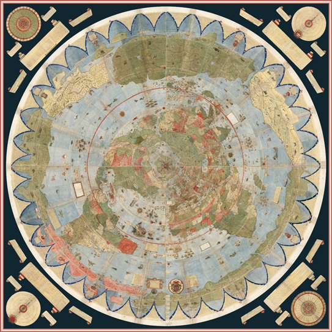
The original globes were basically flat-Earth maps stuck onto a round ball. Mounted onto a globe Monte's map looks like this:
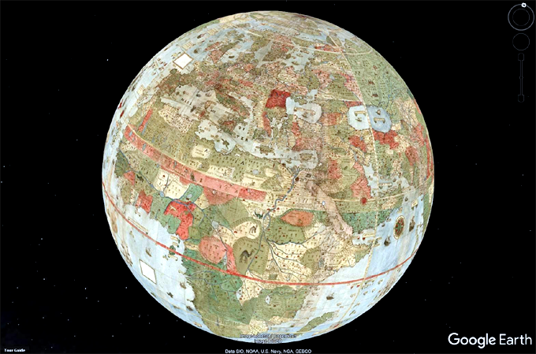
The question is whether the flat-earth projection or globe more accurately depicts the reality of our local Earth. The map below shows a purported 1,000 year old Buddhist map showing the flat-Earth projection of our known Earth (in the center) surrounded by other continents belonging to parts of a larger Earth plane:
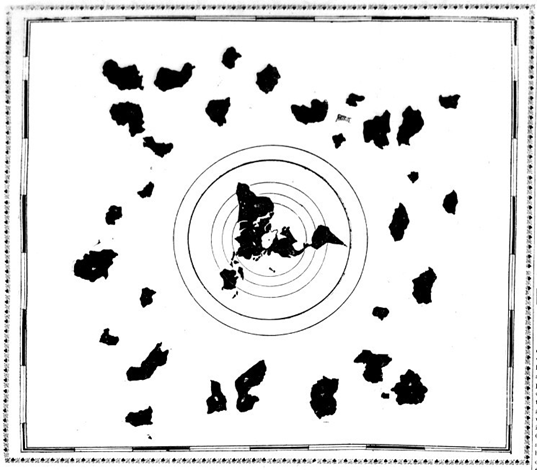
The above map featured in the January 11, 1907 edition of the Hawaiian Gazette. The map was found in a Japanese temple by the brother of a Dr. Kobayashi who was an eminent Japanese surgeon and physician in Honolulu at the time. The map is believed to be 1,000 years old. Whether real or hoax, the concept of our Earth being surrounded by more areas of Earth is exactly what Srimad Bhagavatam and other Puranas describe. The problem for most of us in conceptualizing what the Vedic Earth looks like is because we have been convinced that we are on a ball floating in space. If we are to believe Srimad Bhagavatam, we are actually not that far from our neighbours in the rest of Bharata-varsha, nor very far away from our more enlightened neighbours on the mainland of Jambudvipa. In reality we are only a few thousand miles away.
Considering the context that Bharata-varsha is described as being part of a greater circular landscape, there is no reason why any of the above measurements presented by Danavir Goswami should be taken as measurements for a globe as opposed to the a small circular portion of the greater flat-Earth circle. Indeed any measurements given in the Vedic scriptures for specific areas of Bharata-varsha, are by default, measurements for specific areas of the Vedic flat-Earth, and not measurements for globes that float in space. It is only because of our modern assumption that the Earth is a globe, that we unjustifiably infer the above measurements must be referring to said globe.
Moreover, once the smaller measurements become established in the mind of devotees as references for an Earth globe, the rest of the Bhu-mandala's flat-Earth landscape becomes an uncomfortable intrusion to the iconic image of the isolated Earth-globe floating in dark space. The idea that there is more to our Earth becomes the 'freak' idea in Vedic cosmology and an idea to be refuted, when it is actually the idea that followers of Srimad Bhagavatam are meant to be presenting to the rest of the world via the Mayapur Temple of Vedic Planetarium (TOVP). The TOVP is for the purpose of presenting Srimad Bhagavatam's cosmology, yet, the modern globe idea (which is never once described in Srimad Bhagavatam or any other Purana) is being presented and promoted as a concept described by the Vedic rishis; and meanwhile the reality that the Vedic rishis actually describe (that our known area of the Earth is surrounded by more of the Earth-circle) is an idea that is demoted and effectively put out of mind. Within ISKCON, Bhu-mandala is still discussed more as an abstract concept belonging to an another dimension, rather than the reality of the Earth we live upon. On the other hand, any mention of flat-Earth is regarded as taboo and heretical.
When we take into context the fact that the Puranas describe only one Earth (Bhu-mandala) which is measured at pancasat-koti-yojana (4 billion miles), the obvious conclusion is that any figure for a smaller area of the Earth is simply a reference to a smaller local area of the greater flat-Earth plane. This can be easily understood with reference to the Narada Purana which also gives a smaller measurement for our local Earth area. The following statement can be found in chapter 54 of the Narada Purana which deals with mathematics and astronomy:
"The diameter of the Earth is 1600 yojanas (12,800 miles). The square there is to be multiplied by 10, and the square root of the product will give the circumference of the Earth. The Earth's circumference multiplied by the sine colatitude (lambajya) (of a given place) and divided by the radius (trijiva) is the exact circumference of the Earth at that place." (Book 2, chapter 54, verse 83-84)
We are not sure how to calculate a circumference on the basis of the above formula, but the modern formula for calculating the circumference of a 12,800 mile diameter yields a measurement of 40,125 miles. Again the figure is much larger than the proportions for the supposed Earth globe which is measured at 24,900 miles circumference, and once again cannot be used as evidence for an Earth-globe. However, the figure of 12,800 mile diameter and 40,125 miles circumference would not contradict the diameter and circumference on a flat-Earth model as it simply depends on what portion of the land you wish to cover.
Anyone who is accustomed to thinking of 'the Earth' in terms of the globe, (instead of Bhu-mandala) will hastily conclude that this smaller measurement for the diameter of the Earth given in Narada Purana is a reference to an Earth-globe. However, the above measurement is from a section in Narada Purana which deals with astronomy and astrology and is only meant for local calculations; in the chapter that deals with cosmology (chapter 3 of the Narada Purana), 'the Earth', the actual Earth, the one and only Earth, is described in the same way as every other Purana:
"The mountain Meru, the resort of all gods, is located at the centre of the surface of the Earth. The Lokaloka mountains form the farthest end (limit) of the Earth. In between them are the seven seas.
0, prominent Brahmanas! There are seven continents (dvipas) and each continent has its own (chain of) principal mountains, and well-known rivers flowing therein, and the people thereof resemble the immortals i.e. gods.
The names of the continents are: Jambu, Plaksha, Shalmala, Kusha, Kraunca, Shaka, and Pushkara. All of them are regions (traversed by) gods.
These seven continents are surrounded by seven oceans, each having (for its liquid content) salt water, sugarcane juice, wine, ghee, curds, milk, and sweet water.
These continents and oceans should be understood (to have dimensions) in this manner: the latter one is double the former one in extent, and the same with the Lokaloka mountains." (Narada Purana, book 1, chapter 3, verses 41-45)
Here the Narada Purana describes 'the Earth' in the same manner as Bhagavata Purana and every other Purana. The names of the great Mount Meru and Lokaloka Mountain (massive prominent landmarks) are mentioned, and the names of the Earth's seven great islands and oceans are also listed. The islands and oceans alone cover an area of 202,800,000 miles. Srimad Bhagvatam describes the distance between Mount Meru and Lokaloka Mountain (mentioned above) as 1 billion miles:
"Learned scholars who are free from mistakes, illusions and propensities to cheat have thus described the planetary systems and their particular symptoms, measurements and locations. With great deliberation, they have established the truth that the distance between Sumeru and the mountain known as Lokaloka is one fourth of the diameter of the universe—or, in other words, 125,000,000 yojanas [1 billion miles]."
In the above verse, the overall size of the Earth (Bhu-gola) is measured at pancasat-koti—500,000,000 yojanas (4 billion miles). The distance between Mount Meru and Lokaloka Mountain (two prominent landmarks) is 1 billion miles (a quarter of the distance: turiya-bhagah—one fourth). Thus although Narada Purana gives the measurement for a smaller area of the Earth in Bharata-varsha, it has to be understood within the context of the overall description of the larger Earth-circle area. The smaller area is simply a measurement for making local astronomical calculations, etc., in our area of Bharata-varsha. It is not a measurement for an Earth globe that floats in space. In the Garga Samhita, Sr-Krishna states that there is only one Earth in the universe: sri bhagavan uvaca anya na medini loke. (Garga-Samhita, Canto six, chapter 9). The Vedic Earth is described in chapters 16-26 of the fifth canto of Srimad Bhagavatam. From this description we can understand that Bharata-varsha is part of the Earth's colossal landscape, and not a second and separate Earth globe.
In Parts 1 and 2 of this paper we have established that the Earth is actually described in the Puranas as a circular disc that is measured at panchasat-koti-yojana (4 billion miles). The Earth-circle (Bhu-mandala is decribed in chapters 16-26 of the fifth canto of Srimad Bhagavatam, and also in the cosmological sections of other Vedic Puranas. The Earth circle is characterized by seven cosmic-sized islands and oceans which form the inhabited portion on the surface of the Earth, and cover an area of 202,800,000 miles. The central island is called Jambudvipa and is described as a circular landscape with a diameter of 100,000 yojana (800,000 miles). Our known area of the Earth is located at the southern side of this vast landmass in an area called Bharata-varsha. According to this description, our known Earth is thus part of a continual horizontal landscape or flat-Earth, and not an isolated globe that floats in dark space. One would imagine that the presentation of this extraordinary and revolutionary revelation from Srimad Bhagavatam about the Earth's true shape and size, would be the focus of those writing and preaching on the subject of Vedic cosmology; instead, its as if the description and ramifications of this paradigm shifting concept has not yet registered. Unfortunately, the members of ISKCON writing on the subject of Vedic cosmology remain fixated on trying to prove that our area of the Earth located in Jambudvipa is actually a globe floating in space.
Members of the International Society for Krishna Consciousness should be aware that a description of Bharata-varsha manifesting as a globe-shaped planet floating in space is conspicuous by its absence both in the original Puranas, and in the commentaries by the Vaishnava acharyas to chapters 16-26 of Srimad Bhagavatam's fifth canto wherein the Vedic Earth (Bhu-mandala) is described. Since there is no mention of any Earth globe floating in space, one should naturally conclude that Bharata-varsha is what Srimad Bhagavatam describes it to be, namely a portion of land located in the southern area of the greater landmass of Jambudvipa. The idea that Bharata-varsha is a globular planet floating in space has only arisen relatively recently, and is mostly due to the superimposition of Western cosmological assumptions about the Earth that actually have no basis in the original Vedic descriptions.
Despite the subject of the Vedic Earth-circle being a teaching which radically overturns everything we believe to be real and true about the world we live in, the relevance of the discussion may be still largely lost on most members of ISKCON at this early point. This will gradually change as the purifying influence of Nama Avatara ushers in a new Earth paradigm soon to be revealed at the Temple of Vedic Planetarium.